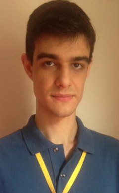

I am an Assistant Professor in the Department of Computer Science (SCC) at the Institute of Mathematics and Computer Science (ICMC), University of São Paulo (USP), which I joined in 2025.
My research interests include content-based image retrieval, machine learning, computer vision, and graph neural networks, with an emphasis on contextual similarity learning for image classification and retrieval. I am the principal investigator of the research project “Contextual Similarity Learning Applied to Graph Convolutional Networks for Image Classification and Retrieval”, funded by the São Paulo Research Foundation (FAPESP, grant 2025/10602-5).
Recent distinctions include the UNESP Thesis Award in Exact Sciences (2025), the Best Paper Award at SIBGRAPI 2025 (Conference on Graphics, Patterns and Images), and an Honorable Mention at SIBGRAPI 2026. Work conducted with my students also received the Best Paper Award and an Honorable Mention at the Workshop on Undergraduate Research (WTAG), held as part of the Brazilian Symposium on Databases (SBBD 2026).
My master's thesis received the Best Master's Thesis Award at the Workshop of Theses and Dissertations (WTD) at SIBGRAPI 2019 and the Second Best Master's Thesis Award in the Theses and Dissertations Contest (CTD), held at the Congress of the Brazilian Computer Society (CSBC 2020), organized by the Brazilian Computer Society (SBC).
I received my PhD in Computer Science from São Paulo State University (UNESP) in 2024, including a research stay at Temple University (Philadelphia, PA, USA) as a Fulbright Scholar (Doctoral Dissertation Research Abroad Award, 2022–2023). I also received my Master's Degree (2019) and Bachelor's Degree in Computer Science (2016) from UNESP.
From July 2023 to January 2025, I worked as a researcher and technical lead on the SIAM project (Automatic Microfossil Identification System) at UNESPetro/UNESP. Funded by Petrobras, the project focused on identifying microfossils using artificial intelligence.
My profiles:
Google Scholar
DBLP
ResearchGate
Lattes
LinkedIn
GitHub
ORCID